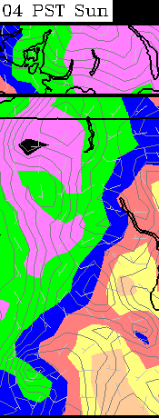
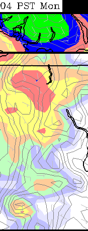
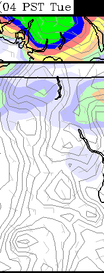
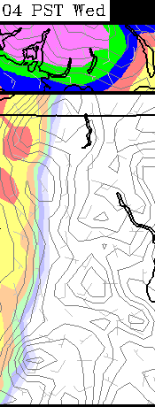
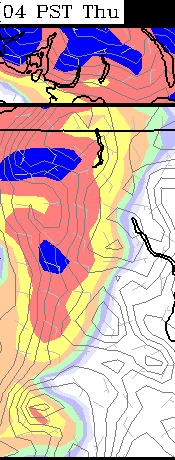
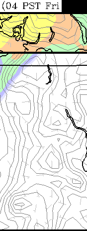
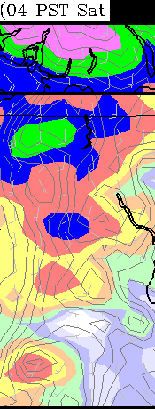
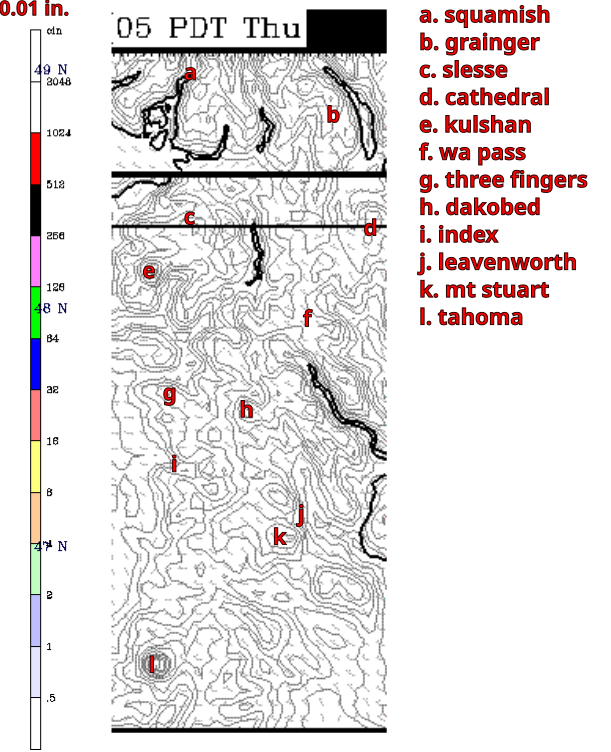

1.33km: 10m wind speed
3 hour precip
integrated cloud
surface temp
12km: 24 hour precip
surface temp
4km: 10m wind speed
3 hour precip
integrated cloud
surface temp
first plot: Sat November 05 2016 17:12 PDT
precip in previous 24 hours







